Dataset: 101,896 rows × 15 columnsA Data-Driven Storytelling Adventure
“Somewhere in 30,000+ rows of used car listings lies the secret to predicting prices.”
Our mission — should we choose to accept it — is to:
Let’s follow the data.
Our dataset has 15 columns — each one a clue:
| Column | What it tells us |
|---|---|
Brand, Model |
Which car it is |
Year, Mileage |
How old / used it is |
Price |
What we want to predict |
Condition, Gearbox, Fuel |
Car characteristics |
Location, Origin |
Where it came from |
First Owner, Equipment |
Status & extras |
Fiscal Power, Sector, Number of Doors |
Technical details |
The first thing any good investigator does — survey the scene.
About 4.43% of the data is missing
Brand 1
Model 1
Condition 3583
Mileage 1
Fiscal Power 280
Number of Doors 11415
Origin 11975
First Owner 14700
Sector 246
Price 25483
dtype: int64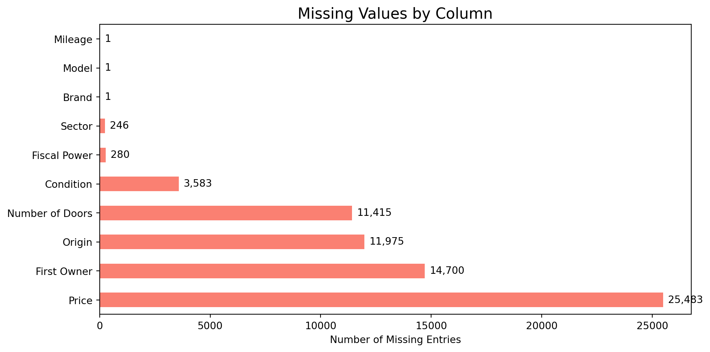
Several columns have missing values. Let’s tackle them one by one!
Answer: Drop them!
Priceis our target variable — without it, a record is useless.
Answer: We can infer it! Cars of the same Brand, Model, and Year almost always share the same door count.
def fill_doors(df):
col = 'Number of Doors'
def group_mode(group_cols):
return (
df.dropna(subset=[col])
.groupby(group_cols)[col]
.agg(lambda x: x.mode().iloc[0] if not x.mode().empty else np.nan)
)
mode_bmy = group_mode(['Brand', 'Model', 'Year'])
mode_bm = group_mode(['Brand', 'Model'])
mode_b = group_mode(['Brand'])
overall_mode = df[col].mode().iloc[0]
def impute(row):
if pd.notna(row[col]):
return row[col]
for key, lookup in [
((row['Brand'], row['Model'], row['Year']), mode_bmy),
((row['Brand'], row['Model']), mode_bm),
(row['Brand'], mode_b),
]:
try:
val = lookup.loc[key]
if pd.notna(val): return val
except KeyError:
pass
return overall_mode
df[col] = df.apply(impute, axis=1)
return df
df = fill_doors(df)
print(f"Missing 'Number of Doors' after imputation: {df['Number of Doors'].isnull().sum()}")Missing 'Number of Doors' after imputation: 0Strategy: Most specific group first (Brand + Model + Year), then fall back gracefully.
| Column | Strategy | Why |
|---|---|---|
Condition |
Drop rows | Can’t reliably infer condition |
Origin |
Fill → "Unknown" |
Better than losing the row |
First Owner |
Fill → "Unknown" |
Could be any owner |
Fiscal Power |
Impute by Brand+Model+Year | Same car = same engine |
Sector |
Fill → "Unknown" |
Optional metadata |
Brand / Model |
Drop the one bad row (#6714) | No way to recover |
df = df.dropna(subset=['Condition'])
df['Origin'] = df['Origin'].fillna('Unknown')
df['First Owner'] = df['First Owner'].fillna('Unknown')
df['Sector'] = df['Sector'].fillna('Unknown')
df = df.drop(index=6714, errors='ignore')
df.drop_duplicates(inplace=True)
df['Year'] = pd.to_numeric(df['Year'], errors='coerce')
df = df.dropna(subset=['Year'])
df['Year'] = df['Year'].astype(int)
df = df[~df['Brand'].str.isnumeric()]
print(f"Clean dataset shape: {df.shape}")Clean dataset shape: (72239, 15)Fiscal Power 199
dtype: int64The crime scene has been processed. Now comes the real investigation.
Is it normal? Skewed? Could it be… hiding outliers?
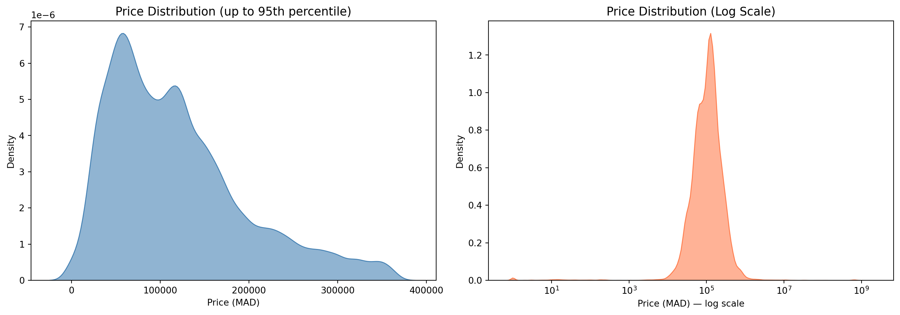
Answer: The distribution is heavily right-skewed — most cars cluster in the affordable range, but luxury outliers shoot the mean upward. Log scale reveals a more symmetric shape.
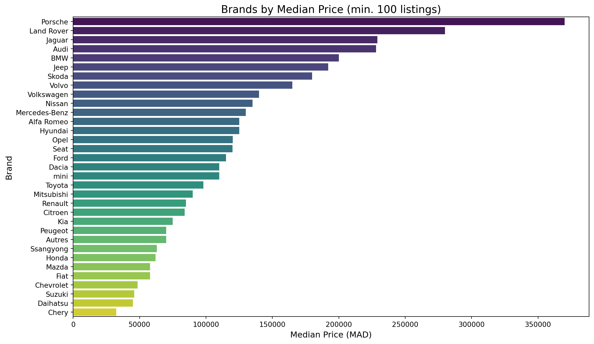
Answer: Porsche, Land Rover, and Volvo sit comfortably at the top. Unsurprisingly, European luxury brands dominate.
Intuitively: older car = lower price. But is that always true?
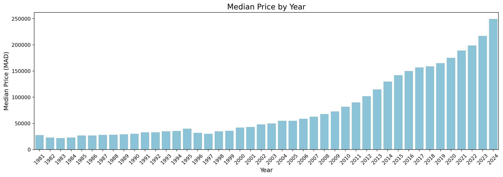
Answer: Yes! The trend is clear — newer cars command higher prices, with a strong upward slope from 2010 onward.
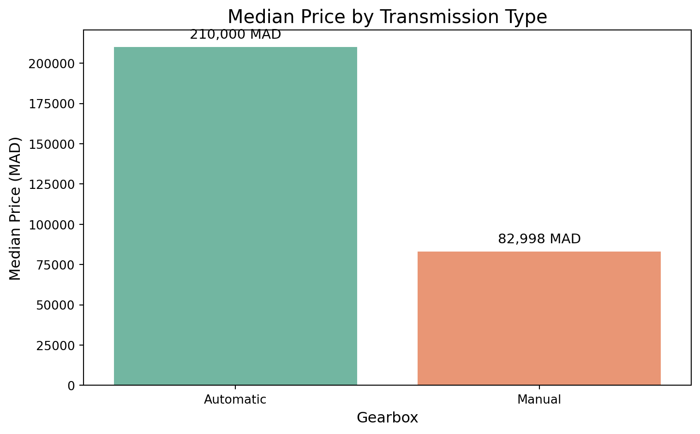
Answer: Automatic cars are significantly pricier — they’re often linked to newer, higher-end models.
We expect: Fair < Good < Very Good < Excellent
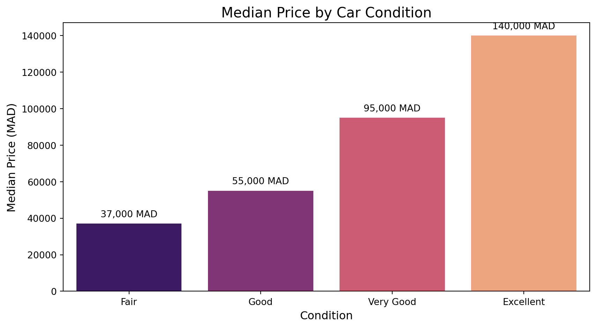
Answer: ✅ Expectations confirmed! Excellent condition cars command the highest price.
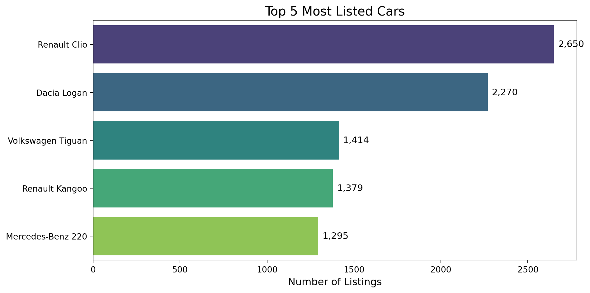
Answer: The Dacia Sandero and Renault Clio lead the pack — affordable, reliable, and everywhere!
“New” = After 2020. Old = 2020 and before.
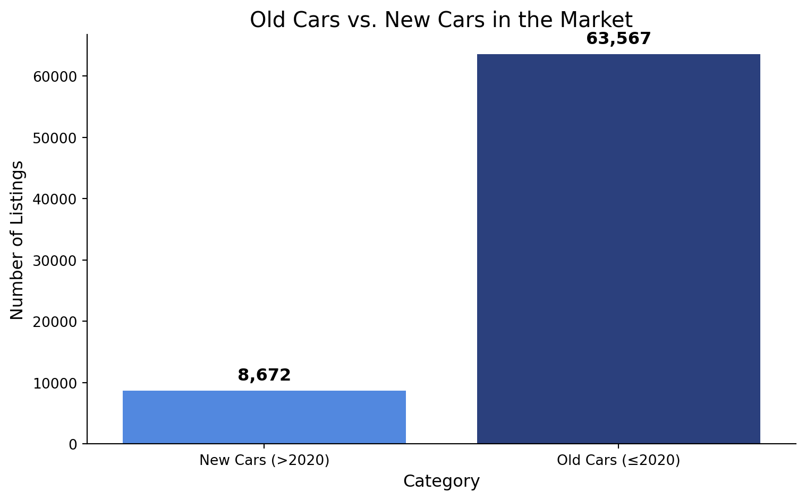
Answer: The market is dominated by older cars — the used car market is truly the domain of pre-2020 vehicles.
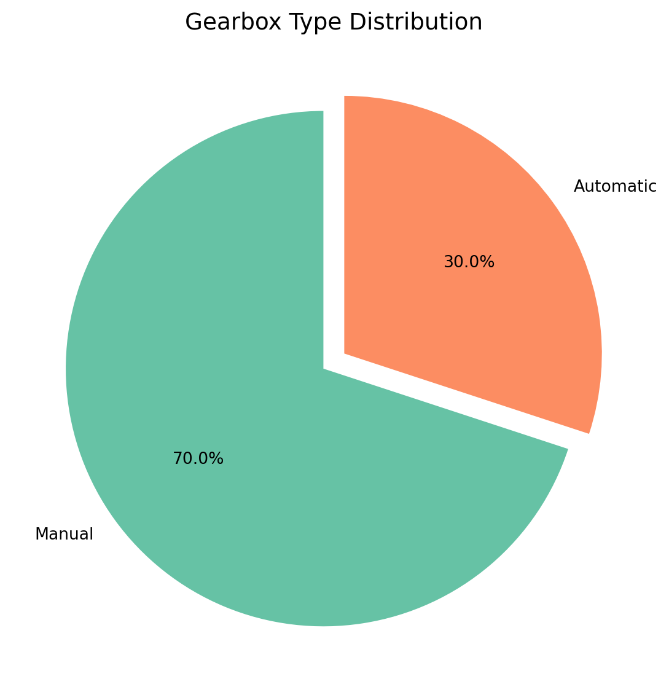
Answer: Manual transmissions dominate the used car market in Morocco — automatics remain a premium niche.
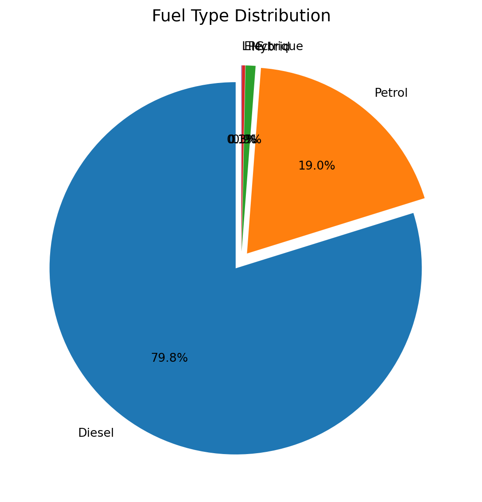
Answer: Diesel leads the way — a reflection of Moroccan driving culture where diesel is preferred for long distances and fuel economy.
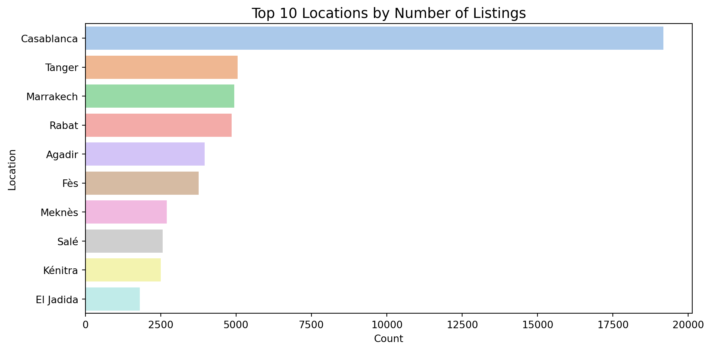
Answer: Casablanca massively leads in listings — Morocco’s commercial capital is also its used car capital.
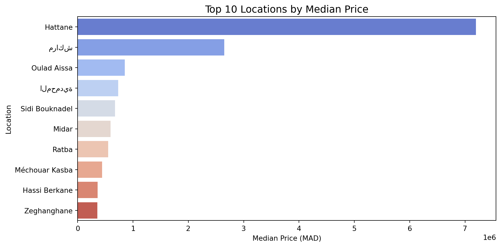
Answer: Location matters! Some cities command significantly higher median prices — likely reflecting wealthier local buyers.
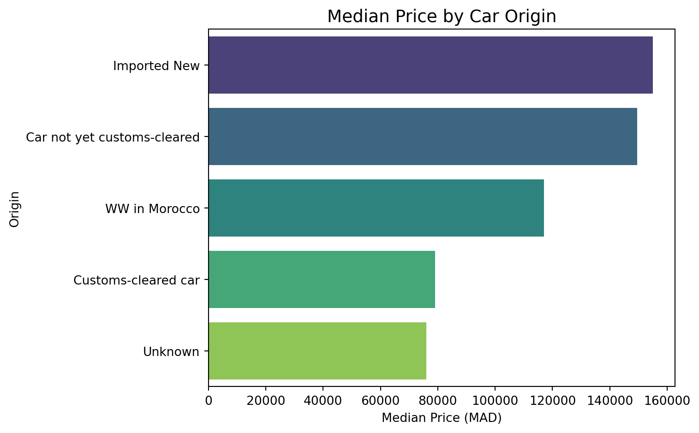
Answer: Yes! Imported and customs-cleared cars tend to command a premium over locally-registered vehicles.
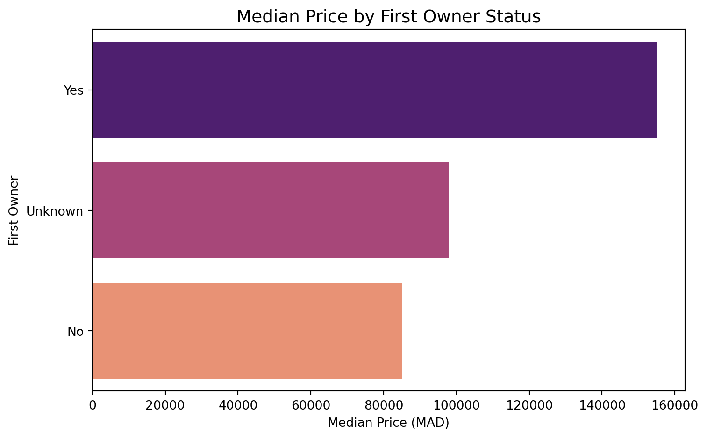
Answer: Yes! First-owner cars clearly command a premium. Buyers trust a single-owner history.
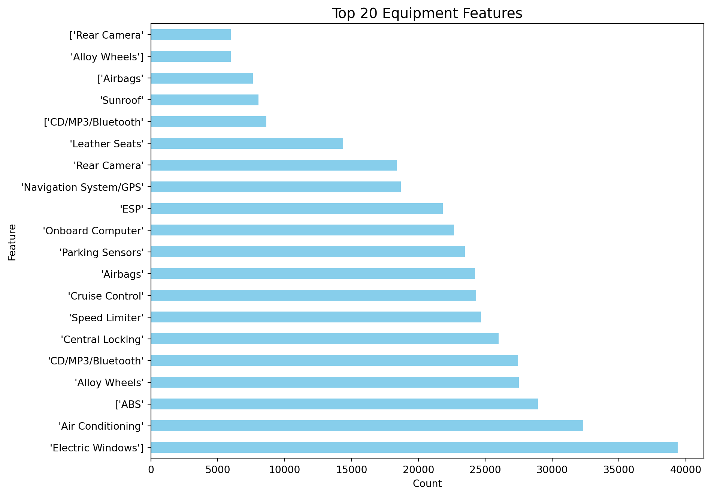
Answer: Safety standards rule! ABS, Airbags, Power Steering, and Air Conditioning are by far the most listed equipment features.
Correlation (# of features vs price): -0.009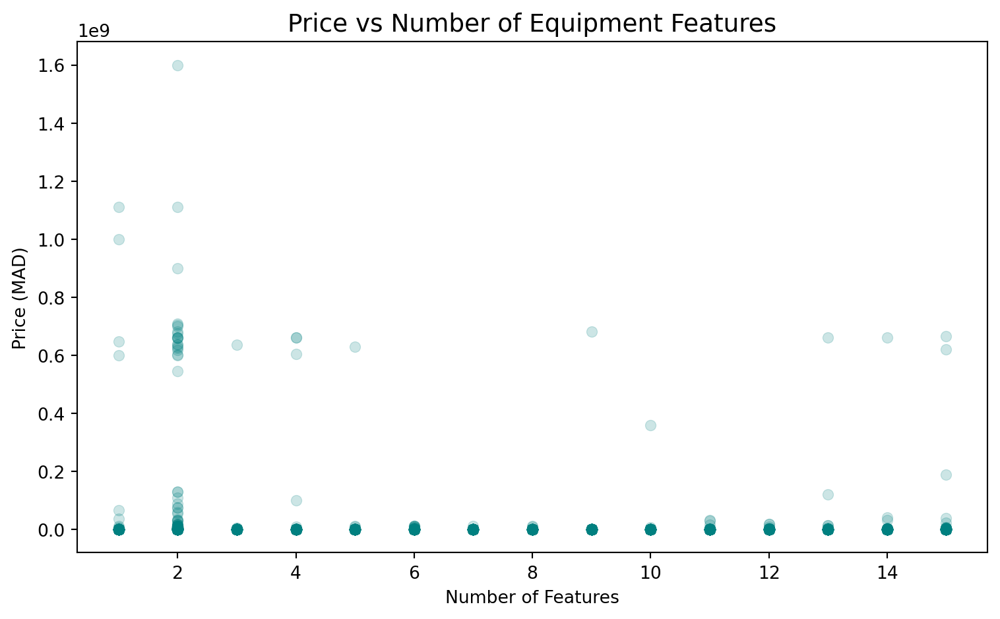
Answer: A positive correlation exists! More equipped cars do tend to fetch higher prices.
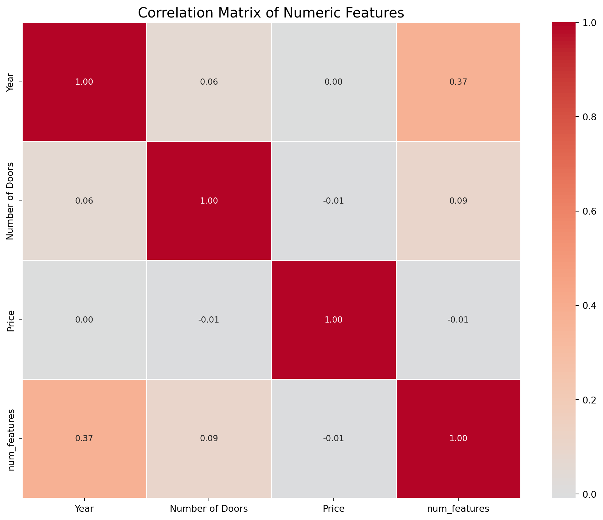
Answer:
YearandFiscal Powershow the strongest correlations withPrice. Higher year (newer) and more engine power → higher price.
We’ve uncovered the key drivers of used car prices:
| Factor | Effect on Price |
|---|---|
| Brand | Porsche > Dacia (a lot!) |
| Year | Newer = More expensive |
| Condition | Excellent >> Fair |
| Gearbox | Automatic > Manual |
| First Owner | Significant premium |
| Equipment Count | More features = higher price |
| Fiscal Power / Year | Strongest numeric correlators |
With a clean, well-understood dataset in hand, the adventure continues:
PriceThe data has spoken. Now it’s time to let the machines learn.
BAHLAOUI Ahmed · ENNACKHLAOUI AYA · LOGRAINE Wiam
ENSAM RABAT — 2025/2026
“In God we trust, all others must bring data.” — W. Edwards Deming
ENSAM RABAT — 2025/2026